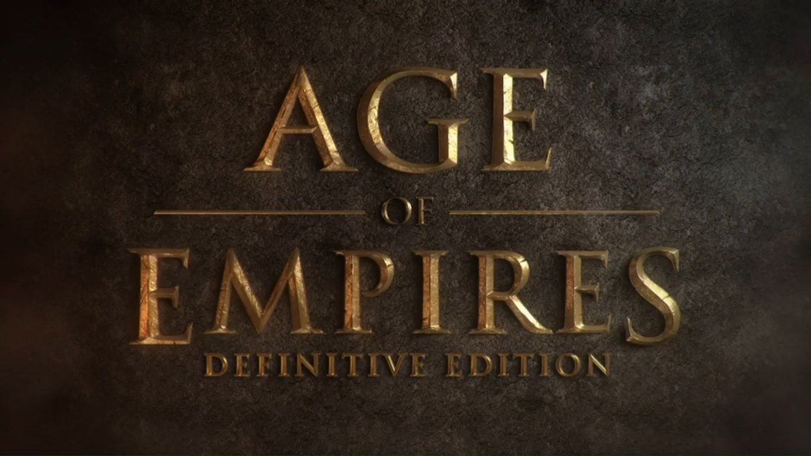
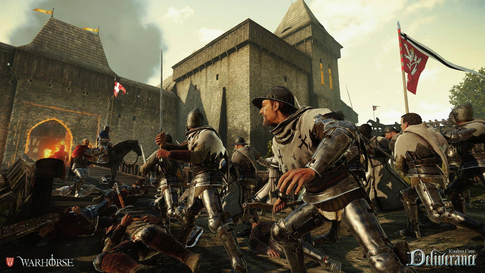
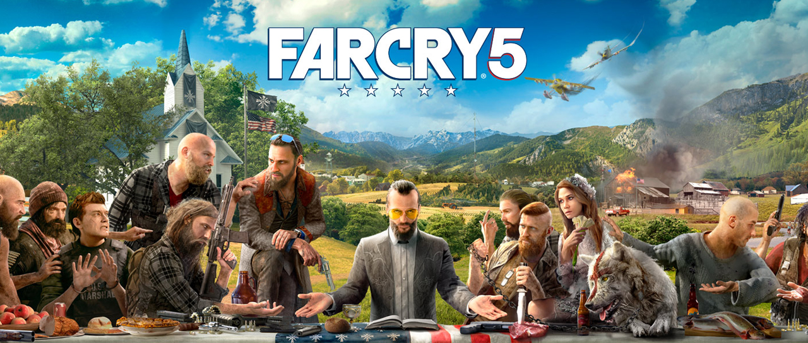

Oscar Orellana
Oscar Orellana soy estudiante de la carrera tecnica en desarrolo y diseño web, en este post les vengo traigo los mejores juegos del 2018
Post Aqui1. Dragon Ball FighterZ

'Dragon Ball FighterZ' es el juego que llevábamos años esperando, un título de lucha fantástico que coloca a sus creadores, Arc System Works, como absolutos favoritos para acabar con la mala racha que la serie de animación llevaba en el mundo del videojuego.
2. Age of Empires: Definitive Edition
El de 'Age of Empires: Definitive Edition' era uno de los estrenos más esperados del año y, aunque con reservas, el factor nostálgico ha ayudado a que consiga hacerse un hueco entre lo mejor del año. Sólo por rememorar los buenos momentos que nos entregó en nuestra juventud, ya es una opción más que recomendable.
3. Kingdom Come: Deliverance
'Kingdom Come: Deliverance' ha empezado su trayectoria tropezando, con errores bastante sonados y polarizando a la crítica, pero a base de actualizaciones y mejoras todo eso cambiará y, con el tiempo, es más que probable que se convierta en un título de culto como a día de hoy lo es 'Skyrim'.
4. Sea of Thieves

Probablemente el lanzamiento más importante de Xbox One de este año y, de regalo, también uno de los grandes de PC. 'Sea of Thieves' es Rare queriendo volver a pegar un puñetazo sobre la mesa, esta vez con un mundo abierto plagado de piratas que nos invita a crear una tripulación con nuestros amigos y surcar los mares en busca de tesoros.
5. Far Cry 5
Ubisoft quería hacer de 'Far Cry 5' la entrega más gamberra y loca de la saga, así que nos ha llevado hasta territorio redneck para que nos veamos las caras con una secta que está aterrorizando al personal. Mucha acción, mucho mapa con mucho icono y, la gran baza de esta entrega, la posibilidad de disfrutarlo de principio a fin en cooperativo.